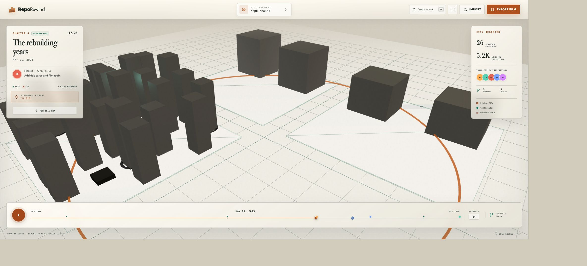
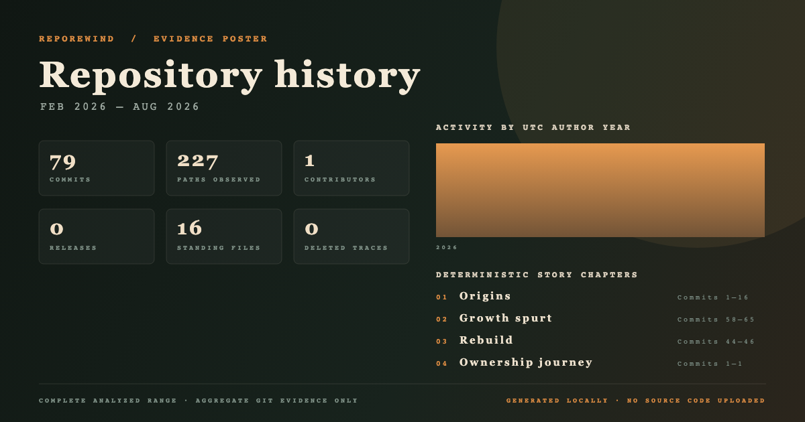
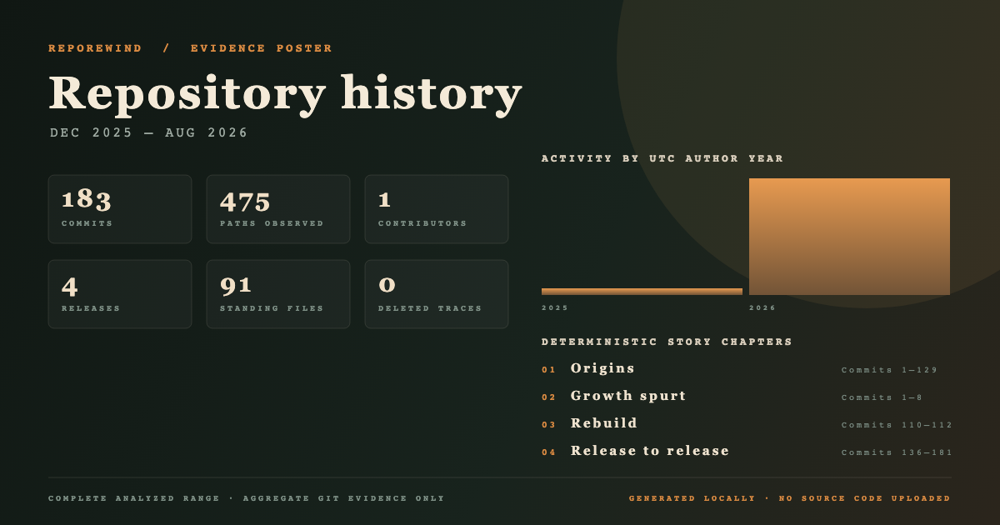

Files stand
Height follows current line count.
Local-first Git cartography01 / The archive
RepoRewind turns a local Git history into a living city—files become buildings, folders form districts, releases mark landmarks, and deleted code remains as ruins.

A deterministic fictional archive, ready on first load.
Scrub across a real first-parent timeline and the city reconstructs states that actually existed. Stable path hashing keeps districts in place, so a neighborhood can grow, change, disappear, and still make geographic sense when you rewind.
Height follows current line count.
Top-level paths become stable districts.
Tags become landmarks in city and time.
Removed files leave selectable ruins.
Repository evidence in, portable history out
The CLI reads metadata, paths, numeric diffs, refs, and tags—never source contents.
npx reporewind /path/to/repository
The loopback session loads automatically; the same bounded validator protects manual archive imports.
Replay, search every trace, inspect a building, or compare two rename-aware eras.
Export a deterministic 1080p or 4K MP4/WebM time-lapse in the current browser tab.
Four views of one archive
Plate 01
Scrub, play, pause, jump to landmarks, orbit the camera, and select any building without losing geographic continuity.
Three repositories · three evidence trails
Every story records its source head, analyzed range, permission, privacy choices, exact replay command, and interpretation limit. No history archive is hosted.
Exhibit 01 · RepoRewind
After v0.1.0, documentation led the touch count while per-commit churn fell by half.
21 commits · complete range
Exhibit 02 · LightClaw
Two module extractions explain why once-central files became ruins rather than disappearing silently.
79 commits · complete range
Exhibit 03 · PDF Editor Offline
Thirty-two renames mark the visible midpoint of a much larger release-to-release expansion.
183 commits · complete rangeA deliberately small trust boundary
Generated archives can still contain sensitive names, paths, commit messages, and remotes. Review before sharing.
Inspect the full privacy boundaryNode.js 24 recommended · npm 10+ · Git
The first run downloads RepoRewind from npm. Your Git history and the local viewer stay on this machine.
Continue to the guidecd /path/to/your/repository
npx reporewind .The history is already there.